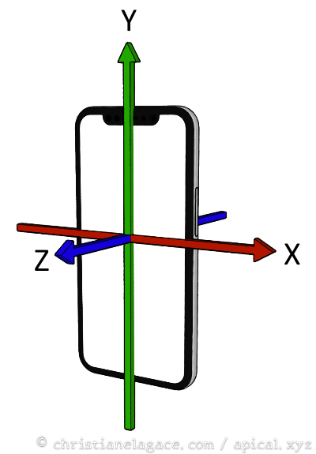
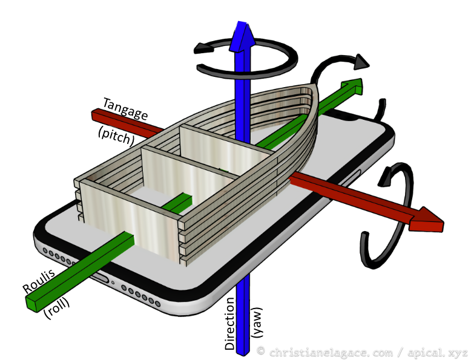
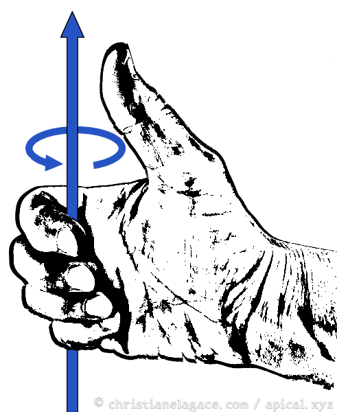
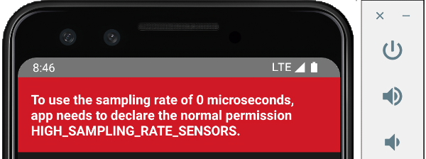

17. Les capteurs¶
17.1 L'orientation du téléphone (attitude)¶
Avant de se lancer dans le développement d'une application mobile qui réagit aux capteurs, prenons le temps de comprendre comment déterminer l'orientation du téléphone.
Axes par rapport au téléphone¶
Normalement, on illustre les axes X, Y et Z avec un téléphone debout.
- L'axe des X (rouge) traverse le téléphone de gauche à droite.
- L'axe des Y (vert) traverse le téléphone de bas en haut.
- L'axe des Z (bleu) traverse l'écran de l'arrière vers l'avant.
Pour facilement retenir la couleur de chaque axe, rappelez-vous qu'on a l'habitude de dire dans l'ordre XYZ et RVB donc X est rouge, Y est vert et Z est bleu.

Orientation¶
L'orientation (en anglais : attitude) permet de déterminer comment le téléphone est positionné.
Elle est définie à l'aide de trois valeurs qui empruntent des termes au monde nautique : le tangage, le roulis et la direction (anglais pitch, roll, yaw).
Les angles d'orientation sont plus faciles à comprendre avec le téléphone couché afin de visualiser les mêmes angles sur un bateau.
- Le tangage (pitch) est l'angle par rapport à l'axe qui traverse le téléphone de gauche à droite.
- Le roulis ou l'inclinaison (roll) est l'angle par rapport à l'axe longitudinal.
- La direction ou lacet (yaw) est l'angle par rapport à l'axe qui transperce l'écran.

Sens de la rotation positive¶
Pour savoir si l'angle est positif ou négatif, on peut s'aider du truc de la main droite.
On place le pouce de la main droite dans le sens positif de l'axe et les doigts indiquent le sens positif de la rotation.

Animation pour illustrer ces valeurs¶
Sur le site, de React Native Animated (je sais, on n'utilise pas ici cette bibliothèque mais c'est tout de même utile ;-)), une petite animation vous permet de bien visualiser les valeurs retournées par les différents capteurs lorsque le téléphone est manipulé : https://docs.swmansion.com/react-native-reanimated/docs/device/useAnimatedSensor/
Attention cependant : le sens du lacet (yaw) pourrait être différent de celui utilisé par iOS.
Pour plus d'information¶
« Axes de rotation d'un aéronef ». Wikipédia. https://fr.wikipedia.org/wiki/Axes_de_rotation_d%27un_a%C3%A9ronef
17.2 Lire les données d'un capteur dans une application React Native¶
L'équipe de React Native a commencé à travailler sur une nouvelle architecture en 2018. Cette architecture a été graduellement introduite dans différentes versions tout en permettant de continuer avec l'architecture originale.
Depuis React Native 0.82, sortie en 2025, les applications utilisent la nouvelle architecture de façon obligatoire.
C'est pour cette raison que plusieurs paquets ont des problèmes de compatibilité dans les projets récents.
Au moment d'écrire ces lignes (décembre 2025), il n'y avait pas de paquet disponible pour travailler avec des capteurs dans un projet React Native 0.82 ou plus récent.
La solution consiste alors à créer un projet avec une ancienne version de React Native, par exemple avec la version 0.75.3 que j'utilisais en 2024. Vous pourrez alors travailler avec le paquet react-native-sensors.
17.3 Paquet react-native-sensors¶
Note : ce paquet n'est plus maintenu depuis 2022 et présente des problèmes de compatibilité avec les versions récentes de React Native basées sur la nouvelle architecture (dernier tests effectués avec React Native 0.82.1 en décembre 2025).
Si vous désirez tout de même l'utiliser, vous devez créer un projet avec une ancienne version de React Native, par exemple avec la version 0.75.3 que j'utilisais en 2024.
Le paquet react-native-sensors permet à une application React Native de réagir face aux données envoyées par un des capteurs du téléphone.
Installation¶
Terminal
cd /chemin/MonProjet
npm install react-native-sensors --save
Si vous obtenez une erreur du genre « EACCES: permission denied », refaites la commande avec sudo.
Déclaration de l'utilisation des capteurs et demandes de permissions¶
Tout comme pour une application native Android ou iOS, une application React Native qui utilise des capteurs doit en faire la déclaration et demander les permissions requises.
Les détails sont donnés dans la section Déclarer l'utilisation des capteurs et demander les permissions requises.
Utilisation¶
Pour commencer à écouter un capteur :
React Native
...
import { accelerometer } from 'react-native-sensors';
const MonComposant = () => {
setUpdateIntervalForType(SensorTypes.accelerometer, 400); // le défaut est de 100 millisecondes
const subscription = accelerometer.subscribe(({ x, y, z, timestamp }) => {
console.log({ x, y, z, timestamp });
... // faire quelque chose avec les valeurs reçues
});
...
}
export default MonComposant;
Il est possible de filtrer les données afin de ne réagir que lorsqu'un écart est observé.
React Native
...
import { accelerometer } from 'react-native-sensors';
import { map, filter } from "rxjs/operators";
const MonComposant = () => {
// code emprunté inspiré de https://react-native-sensors.github.io/docs/Usage.html
const subscription = accelerometer
.pipe(
map(({x, y, z}) => x + y + z),
filter(speed => speed > 20),
)
.subscribe({
next: speed => console.log(You moved your phone with ${speed}),
error: error => {
console.log('The sensor is not available');
},
});
// fin du code emprunté
...
}
export default MonComposant;
Note sur les tutoriels en ligne¶
Soyez vigilents, plusieurs tutoriels présentent du code qui ne fonctionne plus avec la dernière version de react-native-sensors.
Pour un exemple qui fonctionne avec la version 7.3.6 (la version installée dans votre projet apparaît dans le fichier package.json), suivez ce lien : https://github.com/react-native-sensors/react-native-sensors/blob/master/examples/BasicSensors/SensorView.js.
Pour plus d'information¶
« Install React Native Sensors ». React Native Sensors. https://react-native-sensors.github.io/docs/Installation.html
« react-native-sensors/docs/API.md ». GitHub. https://github.com/react-native-sensors/react-native-sensors/blob/master/docs/API.md
17.4 Déclarer l'utilisation des capteurs et demander les permissions requises¶
Tout comme pour une application native Android ou iOS, une application React Native qui utilise des capteurs doit en faire la déclaration et demander les permissions requises.
Les étapes sont les mêmes que pour une application native.
Pour Android : consultez les consignes communes sur les permissions.
Pour iOS : consultez les consignes communes sur les permissions.
Note : si vous obtenez tout de même un message d'erreur dans l'émulateur, comme illustré par l'image plus bas, avec le message « Tu use the sampling rate of 0 microseconds, app needs to declare the normal permission HIGH_SAMPLING_RATE_SENSORS », vous devez reconstruire (build) votre projet afin que les modifications au fichier AndroidManifest.xml soit prises en compte.
Si vous travaillez directement dans la fenêtre dans laquelle la commande npx react-native start a été lancée, appuyez sur la touche r.
Si vous voyez toujours le message, ouvrez une nouvelle fenêtre Terminal, placez-vous dans le dossier de l'application puis entrez la commande npx react-native run-android. Ceci causera une reconstruction complète de l'application.
